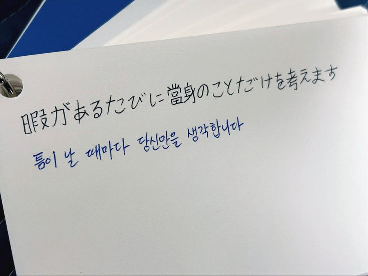

최근에 언어공부를 하면서 느끼는 것은 언어를 공부하면 세계관이 확장된다는 것이다.
● 일본어
핀터레스트에서 일본어 검색하니까 이상한거 밖에 없길래 정상적인거 고른건데 이건 또 왜 싸이월드 감성이지. 이 짤을 가져온 이유는 여기서 당신이라는 표현 때문이다. 내가 일본어를 공부하면서 저기 짤에 나와있는 '당신' 이라는 표현을 처음봤다. 대부분 '아나타' 라고 하거나 아니면 '키미'라고 표현하는데 저것은 무엇이지 싶었다. 콩글리쉬가 있는 것처럼 저기 일본어로 쓰인 표현은 한국인이 그냥 '당신'을 단순히 한자로 쓴 것일까. 모르겠다. 쓸데없는 이야기는 잠시 뒤로 미뤄야겠다. 일본어를 공부하는 이유는 사실 애니메이션을 많이 봤기 때문에 친숙하기 때문임과 동시에 게임이나 콘텐츠를 제작하는데 일본쪽이랑 그 경향이 비슷하다고 생각이 들었기에 일본어를 공부하면 언젠가 도움이 되지 않을까? 라는 생각에서이다. 그리고 일본어 번역 업무를 해보고 싶기 때문에 열심히 하는 이유이기도 하다. 만약에 이번에 jlpt n1을 따게 된다면 그것에서 멈추지 않고 25살쯤에 itt 일어통번역 자격증을 딸 생각이다. 언어공부를 하면서 느끼는 것은 언어를 공부하면 세계관이 확장되는 느낌이 재밌고 흥미롭다.
● 영어
예전에 문신이나 타투를 하고 싶다고 생각을 자주 했었는데, 그렇다면 어떤 걸 몸에 새길까 고민했었다. 좋아하는 캐릭터 또는 글귀를 새기려고 했었는데 이 시를 넣으려고 했었다. 안하길 정말정말정말정말 잘한거 같다. 좋아하는 시라는 것은 지금도 변함 없지만 문신을 했다고 생각하면 뭔가 아닌거 같다. 어쨌거나 과에 영어통번역세부모듈이 있기때문에 졸업을 하기 위해서는 공부를 할 수 밖에 없다. 교환학생을 어디로 갈지 아직 구체적으로 생각하지 않았지만 간다면 영어를 사용하는 쪽으로 가고 싶기 때문에 해야한다. 한때 영어로 열심히 말했을때는 회화가 어느정도 잘 된다! 라는 느낌이 있었는데 지금은 그냥 거의 다 까먹어서 일본어 시험이 끝난 12월 이후부터는 영어만 미친듯이 할 생각이다. 만약 어느정도 영어가 된다 싶으면 파티에 가서 외국사람들과 이야기해보고 싶다.